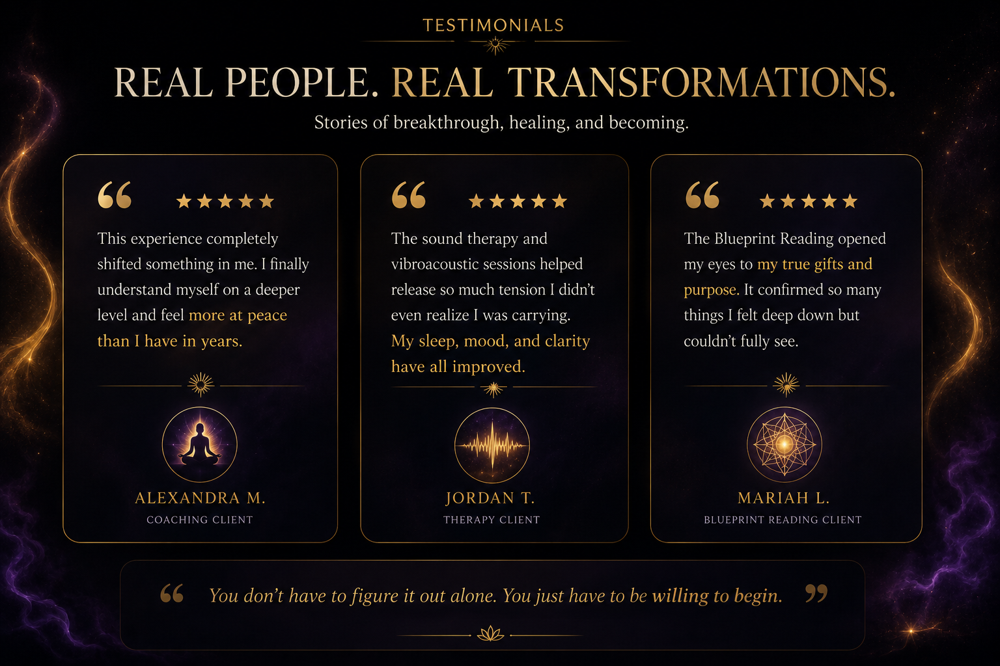

“I felt my nervous system finally slow down for the first time in years.”
Session Experience


Nervous System Reset
The body comes back to safety first.
Learn More
The vagus nerve is one of the body’s major communication pathways, connecting the brain, heart, lungs, gut, and nervous system.
When stress, trauma, anxiety, grief, or survival-mode living builds over time, the nervous system can stay on high alert. The goal is helping the body move toward regulation, safety, calm, and restoration.

Identity & Alignment Coaching
Understand your wiring. Reconnect with who you are.
Learn More
The Blueprint Reading is not traditional astrology. It uses ancient pattern recognition methods involving elements, animals, seasons, energetic patterns, and personality wiring.
The purpose is self-understanding, not prediction. It helps identify natural strengths, emotional tendencies, relationship dynamics, money patterns, career or entrepreneurial lanes, internal conflicts, repeating blocks, gifts, and purpose.
That insight is combined with your life experiences and current struggles to personalize coaching, nervous system work, brain entrainment, vibroacoustic therapy, emotional processing, and creative expression.

Vibroacoustic Therapy
Sound you don’t just hear — you feel.
Learn More
Vibroacoustic therapy uses low-frequency sound vibrations transmitted through the body using specialized equipment. Instead of only hearing sound, the body physically feels it.
Stress does not only live in the mind. Many people carry it physically through shallow breathing, muscle tension, guarded posture, tightness, emotional suppression, and nervous system dysregulation.
The vibration can support deep relaxation, emotional release, nervous system calming, tension release, and restoration.

Brain Entrainment
Light and sound guide the mind back into rhythm.
Learn More
Brain entrainment uses selected frequencies of light, sound, rhythm, and binaural tones to encourage the brain to shift into different brainwave states.
Visual light stimulation uses rhythmic pulses through the eyes and optic pathways. Binaural tones use slightly different tones in each ear, and the brain responds to the difference between them.
These sessions may support stress reduction, relaxation, focus, emotional processing, nervous system regulation, sleep support, mental clarity, and restorative states.


Optional Add-On
Music & Vocal Expression
Creative expression can become a powerful form of emotional release. Sometimes healing begins when what was trapped internally finally finds expression.

Real Experiences
What People Are Experiencing
“The vibroacoustic session felt like my body remembered how to relax.”
Session Experience“I left feeling mentally lighter, emotionally calmer, and physically reset.”
Session Experience
Ready To Begin?
Awaken & Reign Studios
Life Coaching • Nervous System Reset • Vibroacoustic Therapy • Brain Entrainment • Music Healing
Phone
(785) 580-1679
(785) 580-1679
Email
xcell.blueprint@gmail.com
xcell.blueprint@gmail.com
Facebook Messenger
Awaken and Reign Studios
Awaken and Reign Studios
Cash App
$Xcellblueprint
$Xcellblueprint
From the Sky Within